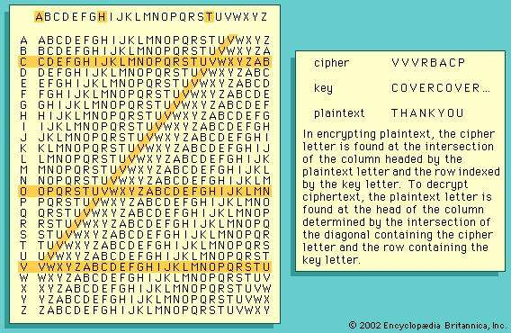

The Vigenère Cipher
Contents
The Vigenère Cipher is a polyalphabetic substitution cipher, where a plain-text phrase would be encrypted and decrypted through a keyword, which would serve as a lookup for how many shifts would be performed on a character.
 Source: Britannica
{kind=link}
Cool right!?
So how would you break it?
Kasiski test
The Kasiski test lends itself upon the identification of patterns, repeated words and phrases within the cipher text - and the assumption that repeated segments represent the same plaintext segments.
This test helps to identify the possible key lengths, and suggests that the possible key lengths would be the distance, half the distance, a quarter of the distance, an eigth of the distance, etc …
i.e. if the distance was 16, the key could be 16, 8, 4, 2 or 1 characters long.
A key length of one is just a Caesar Cipher
The idea is that probably such a repeated sequence comes from the same plain text sequence, which then randomly hit the same keyword position. They will only hit the same position if their distance is a multiple of the keyword length.
- Source: StackOverflow
Index of Coincidence
> *click* <